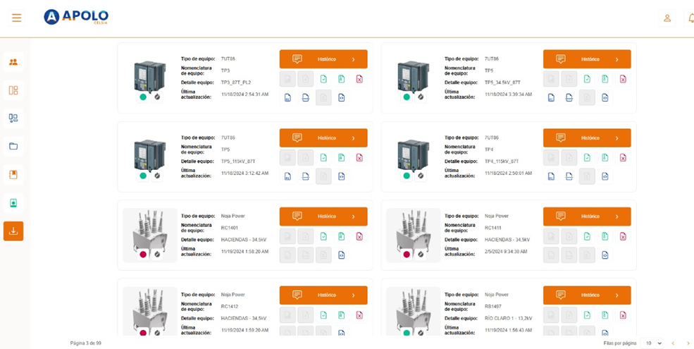

Reto 01
Interfaz de monitoreo y visualización de equipos.
Desarrollo de una interfaz web para visualizar el estado de equipos electrónicos distribuidos en múltiples subestaciones, consumiendo datos en tiempo real desde servicios .NET vía APIs REST. Participé en la definición de mockups y en el diseño de la información en pantalla, decidiendo qué variables mostrar, cómo agruparlas y qué jerarquía visual usar para que el operador pueda diagnosticar rápidamente.

Reto técnico
Renderizar cientos de equipos con sus estados, archivos y accesos rápidos sin saturar al operador ni perder rendimiento ante actualizaciones frecuentes.
Resultado
Vista funcional que permite filtrar por zona, validar el estado en tiempo real, descargar archivos del equipo y entrar al histórico con un click.